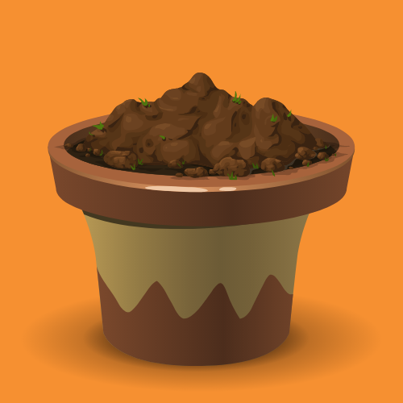
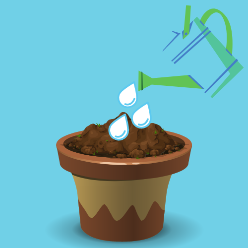
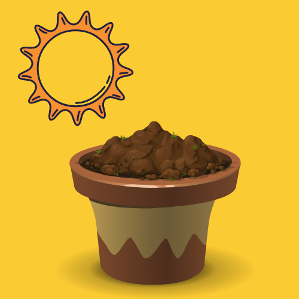
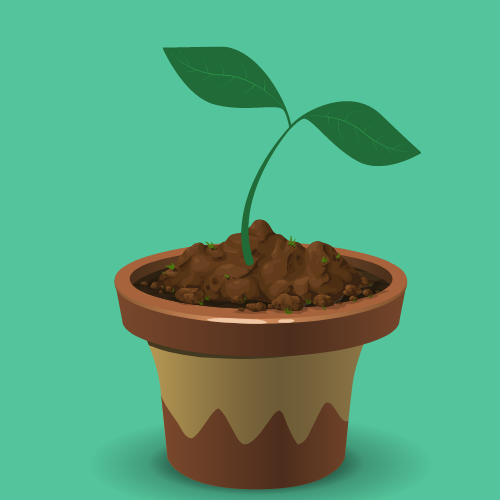
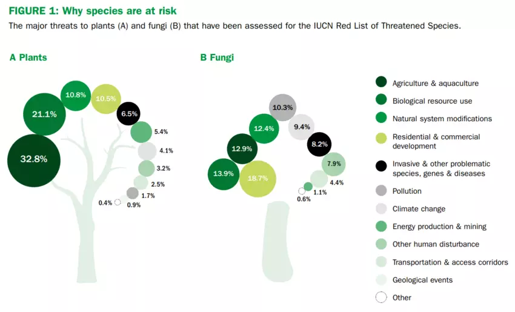

How To Grow A Plant
Step 1: Grab an empty pot
Step 2: Add dirt and seeds to the pot

Step 3: Water the pot

Atep 4: Allow for sunlight to reach the pot

Step 5: Watch your plant grow!

There are many plants going extinct
The fact that 40 percent of plant species are at risk paints "a very worrying picture of risk and urgent need for action," according to Alexandre Antonelli, director of science at Royal Botanic Gardens Kew, as The Irish Times reported.
"We are also losing the race against time, species are probably disappearing faster than we can find and name, and many of them could hold important clues for solving many of the pressing challenges of medicine and perhaps even some of the emerging or current pandemics," he added.
The scientists involved in the research noted that more than 4,000 plant and fungi species were discovered last year. These plants are an untapped resource that holds tremendous promise as food, medicine and biofuels, according to the paper, as The Guardian reported. Some of the new species discovered include members of the onion family, plants similar to spinach, and relatives of the staple crop cassava.
Around the world, billions depend on plants as their primary source of medicine. The report noted that 723 species used as therapeutic treatments are threatened with extinction.
"We would not be able to survive without plants and fungi. All life depends on them, and it is really time to open the treasure chest," said Antonelli, as The Guardian reported. "Every time we lose a species, we lose an opportunity for humankind."
